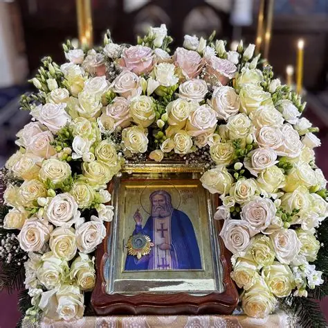
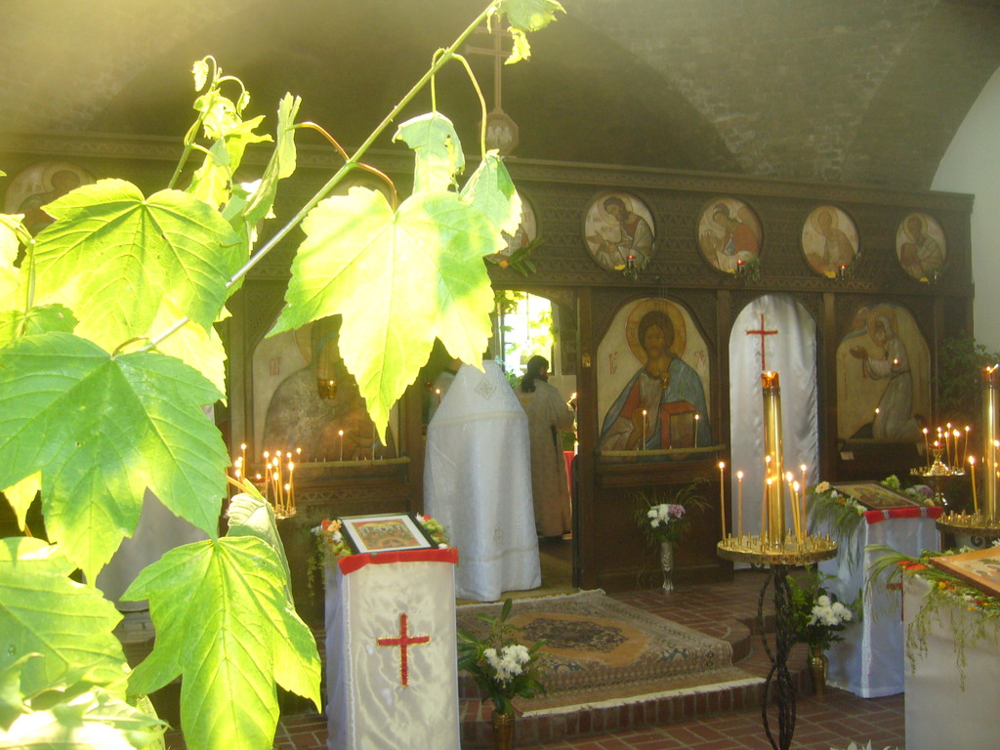

Histoire de la
paroisse
D'Anne de Kiev au Moulin de Senlis, de Sophie Zernova à l'iconostase du père Grégoire Krug.
Anne de Kiev et le Moulin de Senlis
Le domaine est lié à Anne de Kiev, fille de Iaroslav le Sage, devenue reine de France en 1051 par son mariage avec Henri Ier. Elle fonde une abbaye à Senlis, qui possédera plusieurs terres en France ; l'une d'elles, à Montgeron, deviendra le « Moulin de Senlis ».
La Maison d'enfants russe
Neuf cents ans plus tard, Sophie Mikhaïlovna Zernova, bienfaitrice et militante de l'émigration russe, parvient à acheter le domaine du Moulin de Senlis grâce à de nombreux dons. Elle y établit une Maison d'enfants pour les orphelins de l'émigration.
Construction de l'église
Le temple est édifié par A. P. Chtchebliakov, avec l'aide d'un pensionnaire de l'orphelinat, Niki Vassiliev. Le modèle choisi est l'une des églises byzantines du lac d'Ohrid, en Macédoine — en mémoire d'Anne de Kiev, dont la grand-mère était une princesse byzantine.
L'iconostase du père Grégoire Krug
L'iconostase est peinte par Grégoire Krug (1918-1969), le plus grand des iconographes du Paris russe. Moine au skite du Saint-Esprit près de Paris, il y consacre sa vie à la peinture d'icônes dans une stricte ascèse monastique.

Une histoire qui continue
L'iconostase du père Grégoire continue de ravir les paroissiens par la profondeur de ses couleurs et sa lumière. L'histoire de ce lieu, fondée sur le don de soi et la foi en Dieu, est une histoire de bien humain qui se poursuit.
Histoire du temple et du domaine du Moulin de Senlis
Anne de Kiev, reine de France
Le domaine du Moulin de Senlis est associé au nom d'Anne de Iaroslav, fille de Iaroslav le Sage (1019-1054), devenue reine de France et épouse d'Henri Ier. En France, elle est connue sous le nom d'Anne la Russe ou Anne de Kiev.
Elle était belle, intelligente et instruite. Outre le russe, elle connaissait le grec et le latin ; au cours de son long voyage, elle eut le temps d'apprendre le français. Elle signa son contrat de mariage en deux langues, tandis que son royal époux n'y apposa qu'une croix, n'ayant apparemment pas su écrire.
Anne apporta avec elle un magnifique Évangile slave, et tous les rois de France avant la Révolution prêtèrent serment sur celui-ci, sans connaître la langue mystérieuse dans laquelle il était écrit. La Bibliothèque nationale de Paris le conserve précieusement sous le nom d'« Évangile de Reims ». Pendant des siècles, les rois de France, en accédant au trône, prêtèrent serment de fidélité à la patrie sur un livre créé à Kiev dans la première moitié du XIe siècle. Aujourd'hui, seules quelques pages en subsistent.
Immédiatement après son couronnement, la reine Anne, dédaignant Paris, s'établit avec sa cour à Senlis. Aujourd'hui petite ville à 50 km de la capitale française, c'était alors une forteresse médiévale entourée de magnifiques forêts riches en gibier. Elle aima beaucoup cet endroit ; il lui rappelait probablement sa terre natale. Les dernières années de sa vie, Anne se consacra aux œuvres de charité. C'est à Senlis qu'elle fonda une abbaye, sur le territoire de laquelle se trouve une église du XVIIe siècle. On y conserve une sculpture en relief représentant la princesse russe tenant dans ses mains un modèle du temple qu'elle a fondé.
Cette abbaye possédait des terres dans d'autres parties de la France. Montgeron était l'une de ces propriétés. Quand un moulin y fut construit, on l'appela Moulin de Senlis. Anne fut la première Russe à arriver en France, en 1053. Neuf cents ans plus tard, cette partie de ses propriétés tombe entre les mains d'une remarquable femme russe et devient un refuge pour les enfants dans le besoin.
Sophie Mikhaïlovna Zernova et la Maison d'enfants
Cette femme russe dévouée s'appelait Sophie Mikhaïlovna Zernova. Elle menait une activité intense pour rassembler l'émigration, pour éduquer la jeunesse émigrée, et venait en aide aux émigrés pauvres. Bienfaitrice et militante communautaire, elle sauva, pendant la guerre, des centaines d'émigrés de la mort par la faim et de la livraison aux agents des services secrets. Femme courageuse, dynamique et dévouée, c'est à soixante-dix ans qu'elle dirigeait un orphelinat pour les enfants orphelins de l'émigration.
Après la guerre, en 1953, grâce à de nombreux dons, Sophie Mikhaïlovna réussit à acheter le domaine du Moulin de Senlis à Montgeron pour y établir une Maison d'enfants russe. C'était un beau lieu, avec un magnifique château préservé jusqu'à aujourd'hui, un parc et une rivière se terminant en étang… mais il fallait de l'argent pour rénover les bâtiments.
L'histoire de la construction de cet orphelinat fut longue et difficile, et chaque fois Sophie Mikhaïlovna se confia à Dieu et aux bonnes personnes. Une fois, il fallait une grosse somme d'argent pour payer les impôts et on ne savait où la trouver ; alors Sophie Mikhaïlovna pria… Le lendemain matin, elle trouva une enveloppe : la jeunesse néerlandaise avait décidé d'aider une organisation de réfugiés et avait choisi dans une liste la Maison d'enfants de Montgeron. Véritablement, on peut dire : « Tu es Dieu, qui fais des miracles. »
L'église et l'iconostase du père Grégoire Krug
En 1957, il fut décidé de construire une église. Notre temple fut bâti par A. P. Chtchebliakov, avec l'aide d'un pensionnaire de l'orphelinat, Niki Vassiliev. Le modèle choisi fut l'une des églises byzantines du lac d'Ohrid, en Macédoine, en mémoire d'Anne de Iaroslav dont la grand-mère était une princesse byzantine.
L'iconostase du temple fut peinte par le plus grand des iconographes du Paris russe, Grégoire Krug (1918-1969). Il était membre de la Société « Icône » avant de prendre l'habit monastique. À trente-neuf ans, il devint moine et abandonna la peinture profane pour se consacrer entièrement à la peinture d'icônes. Il passa la plus grande partie de sa vie dans une stricte ascèse monastique, dans le jeûne et le dénuement — pour parler franchement, dans la pauvreté — au petit skite du Saint-Esprit près de Paris, où il est enterré. Il laissa après lui un important héritage iconographique.
Le père Grégoire atteignit cet équilibre instable entre la fidélité profonde à la tradition et un véritable élan créateur, qui lui permit d'aller au-delà du simple métier et de revivifier l'icône ancienne. Il chercha à pénétrer l'essence de l'icône, la comprenant comme l'expression imagée des dogmes de l'Église. Ses principaux travaux sont des iconostases et des fresques, dont l'une se trouve dans notre temple, et d'autres au podvorié des Trois-Hiérarques à Paris, à l'église du Saint-Esprit à Clamart, ainsi qu'au skite du Saint-Esprit où il passa les dernières années de sa vie. Grégoire Krug exécuta également de nombreuses icônes sur commande privée en France, aux Pays-Bas, en Angleterre et en Italie. À ce jour, l'iconostase de notre temple ravit les yeux de ses paroissiens par la profondeur extraordinaire des couleurs et la lumière.
Depuis les temps anciens, le processus de la peinture d'icônes s'appelle « luminographie ». Cela se voit de manière étonnamment éclatante dans les icônes du père Grégoire Krug. La matière même de ses icônes n'est pas tant le bois et la peinture, mais la lumière qui pénètre tout ce qui est représenté — comme les rayons du soleil qui, par la fenêtre, remplissent une pièce sombre. Cette lumière est le symbole de la gloire de Dieu.
Les icônes du père Grégoire n'ont pas été peintes pour des habitants inconnus d'un monde transcendant, mais pour des hommes tout à fait concrets. C'est pourquoi leur contenu théologique invariable et leur forme canonique se trouvent enrichis de traits directement liés à la perception de ceux pour qui ces icônes étaient destinées. Ainsi, l'icône du Sauveur de notre église fut peinte pour les orphelins : au milieu des ruines, de la pauvreté et d'une injustice insondable, ces enfants avaient perdu non seulement leurs parents, mais surtout ceux qui leur auraient enseigné l'amour désintéressé et la bonté. Les icônes de la chapelle de l'orphelinat, et en particulier celle du Sauveur, comblaient ce manque, enseignant aux enfants la voie de l'amour christique — vivifiant, salvateur et universel. Le Seigneur, sur cette icône, rayonne une lumière chaleureuse et joyeuse. Il ne juge pas, ne repousse pas : au contraire, il est prêt à nous étreindre.
La seconde icône, jumelée à celle du Sauveur, est celle de la Mère de Dieu de Tendresse (« Glykofiloussa », en grec « doux baiser »). Elle transmettait aux enfants orphelins le souvenir et la tendresse de l'amour maternel, et répondait peut-être aux questions silencieuses des enfants sur le sens de leurs souffrances. C'est le Fils — vêtu d'habits pénétrés par les rayons de la lumière dorée de la Gloire du Seigneur — qui embrasse sa Mère, se donnant tout entier à Elle dans un élan d'amour sacrificiel. En réponse, elle apporte à Dieu non seulement elle-même, mais toute la création : les enfants orphelins qui regardent son visage dans l'église de Montgeron, leurs mères et pères défunts, et nous-mêmes en ce moment — ramenant tout le monde vers son Créateur. Même le geste de sa main gauche, tenant le Sauveur, rappelle le calice eucharistique avec les Saints Dons.
L'histoire de ce lieu est longue et complexe, fondée sur le don de soi et la foi en Dieu. C'est une histoire de bien humain, qui continue…
Galerie
Vues de l'église et de son iconostase

Saint Séraphim de Sarov
Saint Séraphim de Sarov (1754–1833) est l'un des saints les plus vénérés de l'Église orthodoxe russe. Moine et ermite, il vécut dans une forêt près de Sarov en prière et en ascèse. Ses paroles — « Acquiers la paix intérieure et des milliers d'âmes trouveront le salut autour de toi » — continuent d'inspirer les fidèles du monde entier. Il fut canonisé en 1903 sous le règne du tsar Nicolas II.
C'est sous son patronage que notre paroisse a été placée, en mémoire de sa douceur, de sa charité et de sa lumière spirituelle.